Image 1 of 1: ‘Table displaying a high-dimensional data set with many columns representing features related to health, such as blood pressure, heart rate and respiratory rate. Each row contains the data for an individual patient. This type of high-dimensional data could contain hundreds or thousands of columns (features/variables) and thousands or even millions of rows (observations/samples/patients).’
Example of a high-dimensional data table with features in the columns
and individual observations (patients) in rows.
Figure 2
Image 1 of 1: ‘A set of pairwise scatterplots of variables in the 'prostate' dataset, namely lcavol, lweight, age, lbph, svi, lcp, gleason, pgg45, lpsa. The plots are shown in a grid.’
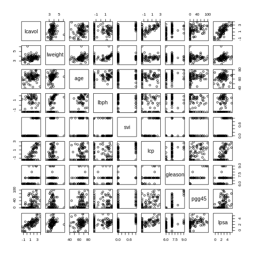
Pairwise plots of the ‘prostate’ dataset.
Figure 3
Image 1 of 1: ‘Two scatter plots side-by-side, each plotting the relationship between two variables. The scatter plot on the left hand side shows 25 observations and a regression line with the points evenly scattered around. The scatter plot on the right hand side shows 2 observations and a regression line that goes through both points.’
Scatter plot of two variables (x and y) from a data set with 25
observations (left) and 2 observations (right) with a fitted regression
line (red).
Image 1 of 1: ‘Histogram of M-values for all features. The distribution appears to be bimodal, with a large number of unmethylated features as well as many methylated features, and many intermediate features.’
Methylation levels are generally bimodally distributed.
Figure 2
Image 1 of 1: ‘An example of a strong linear association between a continuous phenotype (age) on the x-axis and a feature of interest (DNA methylation at a given locus) on the y-axis. A strong linear relationship with a positive slope exists between the two.’
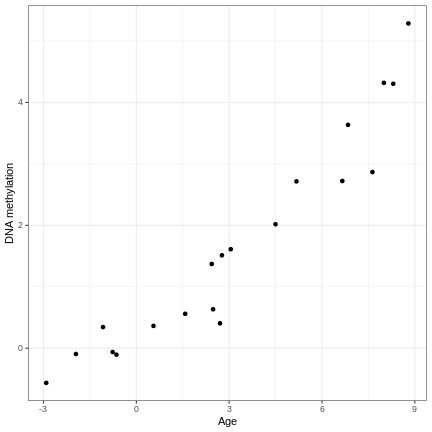
A scatter plot of age and a feature of interest.
Figure 3
Image 1 of 1: ‘An example of a strong linear association between a discrete phenotype (group) on the x-axis and a feature of interest (DNA methylation at a given locus) on the y-axis. The two groups clearly differ with respect to DNA methylation.’
A scatter plot of a grouping and a feature of interest.
Figure 4
Image 1 of 1: ‘An example of a strong linear association between a discrete phenotype (group) on the x-axis and a feature of interest (DNA methylation at a given locus) on the y-axis. The two groups seem to differ with respect to DNA methylation, but the relationship is weak.’
A scatter plot of a grouping and a feature of interest.
Figure 5
Image 1 of 1: ‘An example of the relationship between age (x-axis) and methylation levels (y-axis) for an arbitrarily selected CpG. In this case, the y-axis shows methylation levels for the first CpG in our data. The black line shows the fitted regression line (based on the intercept and slope estimates shown above). For this feature, we can see that there is no strong relationship between methylation and age.’
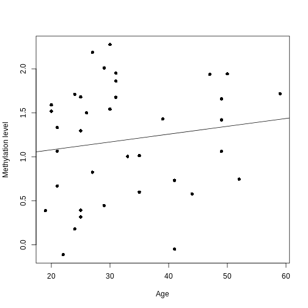
A scatter plot of age versus the methylation level for an arbitrarily
selected CpG side (the one stored as the first column of methyl_mat).
Each dot represents an individual. The black line represents the
estimated linear model.
Figure 6
Image 1 of 1: ‘Density plot of a t-distribution showing the observed test statistics (here, t-statistics). The p-values, visualised here with shaded regions, represent the portion of the null distribution that is as extreme or more extreme as the observed test statistics, which are shown as dashed lines.’
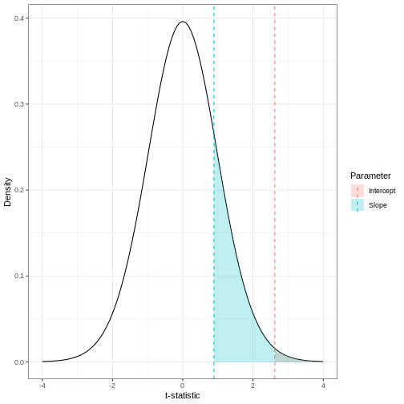
The p-value for a regression coefficient represents how often it’d be
observed under the null.
Figure 7
Image 1 of 1: ‘A plot of -log10(p) against effect size estimates for a regression of age against methylation using limma.’
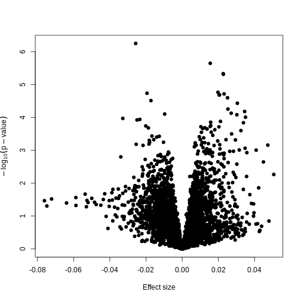
Plotting p-values against effect sizes using limma; the results are
similar to a standard linear model.
Figure 8
Image 1 of 1: ‘A scatter plot of the effect size using limmma vs. those using lm. The plot also shows a straight line through all points showing that the effect sizes are the same.’
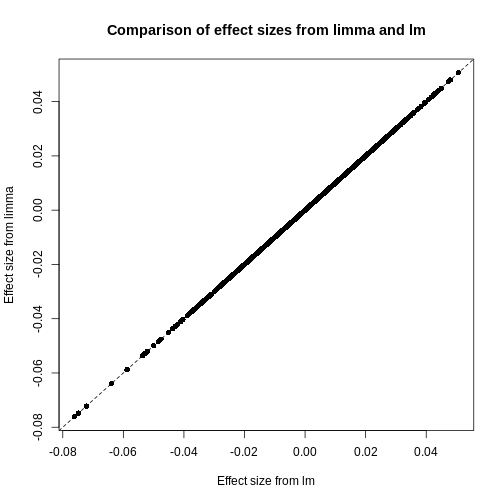
Plot of effect sizes using limma vs. those using lm.
Figure 9
Image 1 of 1: ‘A scatter plot of the p-values using limma vs. those using lm. A straight line is also displayed, showing that the p-values for limma tend to be smaller than those using lm towards the left of the plot and higher towards the right of the plot.’
Plot of p-values using limma vs. those using lm.
Figure 10
Image 1 of 1: ‘A plot of -log10(p) against effect size estimates for a regression of smoking status against methylation using limma.’
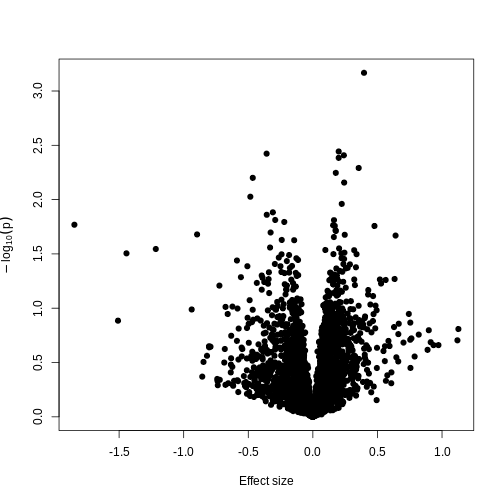
A plot of significance against effect size for a regression of smoking
against methylation.
Figure 11
Image 1 of 1: ‘Plot of -log10(p) against effect size estimates for a regression of a made-up feature against methylation level for each feature in the data. A dashed line represents a 0.05 significance level.’
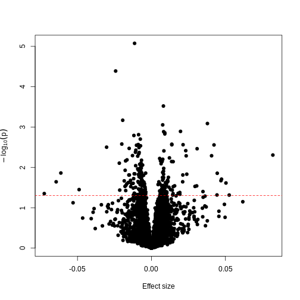
Plotting p-values against effect sizes for a randomised outcome shows we
still observe ‘significant’ results.
Figure 12
Image 1 of 1: ‘Plot of Bonferroni-adjusted p-values (y) against unadjusted p-values (x). A dashed black line represents the identity (where x=y), while dashed red lines represent 0.05 significance thresholds.’
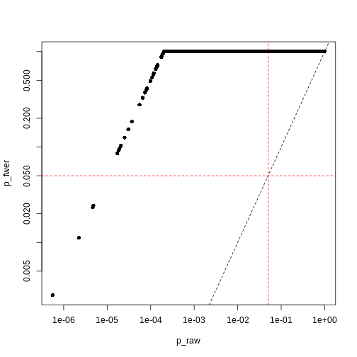
Bonferroni correction often produces very large p-values, especially
with low sample sizes.
Figure 13
Image 1 of 1: ‘Plot of Benjamini-Hochberg-adjusted p-values (y) against unadjusted p-values (x). A dashed black line represents the identity (where x=y), while dashed red lines represent 0.05 significance thresholds.’
Benjamini-Hochberg correction is less conservative than Bonferroni
Figure 14
Image 1 of 1: ‘Plot of Benjamini-Hochberg-adjusted p-values (y) against Bonferroni-adjusted p-values (x). A dashed black line represents the identity (where x=y), while dashed red lines represent 0.05 significance thresholds.’
Image 1 of 1: ‘A symmetrical heatmap where rows and columns are features in a DNA methylation dataset. Colour corresponds to correlation, with red being large positive correlations and blue being large negative correlations. There are large blocks of deep red and blue throughout the plot.’
Heatmap of pairwise feature-feature correlations between CpG sites in
DNA methylation data
Figure 2
Image 1 of 1: ‘For each observation, the left panel shows the residuals with respect to the optimal line (the one that minimises the sum of square errors). These are calculated as the difference between the value predicted by the line and the observed outcome. Right panel shows the sum of squared residuals across all possible linear regression models (as defined by different values of the regression coefficients).’
Illustrative example demonstrated how regression coefficients are
inferred under a linear model framework.
Figure 3
Image 1 of 1: ‘Schematic representation of how a dataset can be divided into a training (the portion of the data used to fit a model) and a test set (the portion of the data used to assess external generalisability).’
Schematic representation of how a dataset can be divided into a training
and a test set.
Figure 4
Image 1 of 1: ‘A scatter plot of observed age versus predicted age for individuals in the test set. Each dot represents one individual. Dashed line is used as a reference to indicate how perfect predictions would look (observed = predicted). In this case we observe high prediction error in the test set.’
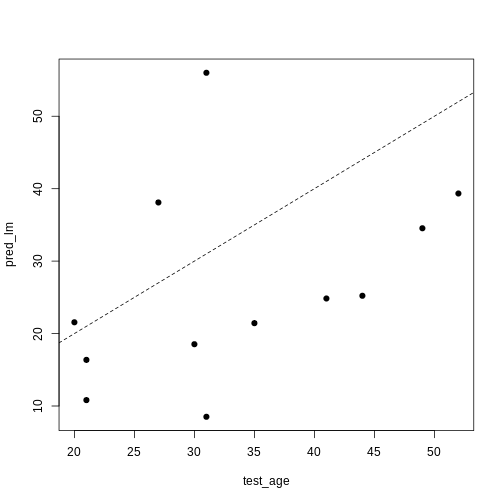
A scatter plot of observed age versus predicted age for individuals in
the test set. Each dot represents one individual. Dashed line is used as
a reference to indicate how perfect predictions would look (observed =
predicted).
Figure 5
Image 1 of 1: ‘For each observation, the left panel shows the residuals with respect to the optimal lines obtained with and without regularisation. Right panel shows the sum of squared residuals across all possible linear regression models. Regularisation moves the line away from the optimal (in terms of minimising the sum of squared residuals). ’
Illustrative example demonstrated how regression coefficients are
inferred under a linear model framework, with (blue line) and without
(red line) regularisation. A ridge penalty is used in this example
Figure 6
Image 1 of 1: ‘A line plot of coefficient estimates against log lambda for a ridge regression model. Lines are depicted in different colours, with coefficients generally having large values on the left of the plot (small log lambda) and moving smoothly and gradually towards zero to the right of the plot (large log lambda). Some coefficients appear to increase and then decrease in magnitude as lambda increases, or switch signs.’
A line plot of coefficient estimates against log lambda for a ridge
regression model.
Figure 7
Image 1 of 1: ‘A line plot of coefficient estimates against log lambda for a ridge regression model. A dashed vertical line depicts the optimal lambda value towards the left of the plot. Lines are depicted in different colours, with coefficients generally having large values on the left of the plot (small log lambda) and moving smoothly and gradually towards zero to the right of the plot (large log lambda). Some coefficients appear to increase and then decrease in magnitude as lambda increases, or switch signs.’
A line plot of coefficient estimates against log lambda for a ridge
regression model, showing the optimal value based on the minimal test
error.
Figure 8
Image 1 of 1: ‘Two plots showing OLS predictions and ridge regression predictions of age (y) against true age (x). A dashed line shows the line y=x. In the OLS plot, predictions are quite extreme, while in the ridge regression plot, they are generally more conservative.’
Two plots showing OLS predictions (left) and ridge regression
predictions (right) of age (y) against true age (x).
Figure 9
Image 1 of 1: ‘For each observation, the left panel shows the residuals with respect to the optimal lines obtained with and without regularisation. Right panel shows the sum of squared residuals across all possible linear regression models. Regularisation moves the line away from the optimal (in terms of minimising the sum of squared residuals)’
Illustrative example demonstrated how regression coefficients are
inferred under a linear model framework, with (blue line) and without
(red line) regularisation. A LASSO penalty is used in this example.
Figure 10
Image 1 of 1: ‘Two line plots side-by-side, showing coefficient values from a LASSO model against log lambda (left) and L1 norm (right). The coefficients, generally, suddenly become zero as log lambda increases or, equivalently, L1 norm decreases. However, some coefficients increase in size before decreasing as log lamdba increases.’
Line plots showing coefficient values from a LASSO model against log
lambda (left) and L1 norm (right).
Figure 11
Image 1 of 1: ‘The data is divided into $K$ chunks. For each cross-validation iteration, one data chunk is used as the test set. The remaining $K-1$ chunks are combined into a training set.’
Schematic representiation of a \(K\)-fold cross-validation procedure.
Figure 12
Image 1 of 1: ‘Alt’
Cross-validated mean squared error for different values of lambda under
a LASSO penalty.
Figure 13
Image 1 of 1: ‘For lower values of alpha, the penalty resembles ridge regression. For higher values of alpha, the penalty resembles LASSO regression.’
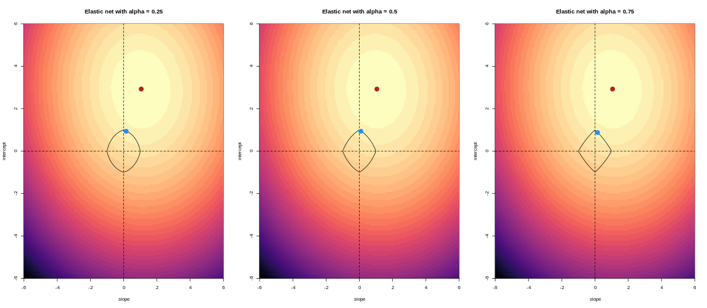
For an elastic net, the panels show the effect of the regularisation
across different values of alpha
Figure 14
Image 1 of 1: ‘A line plot showing coefficient values from an elastic net model against L1 norm. The coefficients, generally, suddenly become zero as L1 norm decreases. However, some coefficients increase in size before decreasing as L1 norm decreases.’
Line plot showing coefficient values from an elastic net model against
L1 norm.
Figure 15
Image 1 of 1: ‘A plot of the cross-validation mean squared error of an elastic net model against log lambda.’
A plot of the cross-validation mean squared error of an elastic net
model against log lambda.
Figure 16
Image 1 of 1: ‘A plot of the cross-validation binomial deviance of a logistic regression elastic net model against log lambda.’
A plot of the cross-validation binomial deviance of a logistic
regression elastic net model against log lambda.
Image 1 of 1: ‘Side-by-side scatter plots of the prostate data. The left figure displays a scatter plot of the log prostate specific antigen versus the log cancer volume. The first principal component is shown by a red line and the second principal component is shown by a green line. The right figure displays the same scatter plot rotated so that the first principal component is horizontal and the second principal component is shown perpendicular to this.’
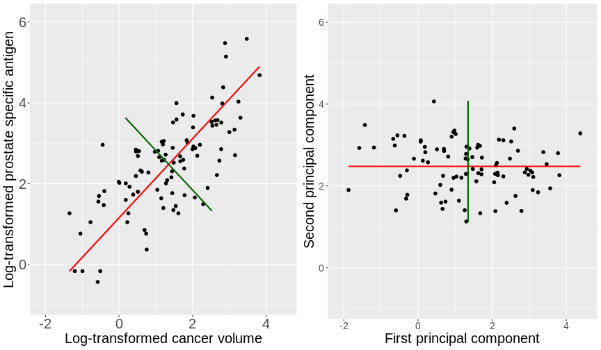
Scatter plots of the prostate data with the first principal component in
red and second principal component in green.
Figure 2
Image 1 of 1: ‘Animated scatter plot displaying the iterative process by which principal components are found. The data points are shown in blue and the principal component is shown by a solid black line. The distances of the points from the line are shown by red dashed lines. The animation initially starts with the principal component far away from the direction of variability in the points and, as time goes on, eventually finds the direction of variability exhibiting a springing motion.’
Animation showing the iterative process by which principal components
are found. Data points are shown in blue, distances from the line as red
dashed lines and the principal component is shown by a black line.
Figure 3
Image 1 of 1: ‘Side-by-side histograms of two variables from the dataset, lweight on the left and lbph on the right. The histogram for the lweight data ranges from around 2 to 6 on the x axis, while the histogram for the lbph ranges from around -2 to 3 on the x axis.’
Histograms of two variables from the prostate data set.
Figure 4
Image 1 of 1: ‘A scree plot showing the percentage of variance explained by each principal component versus the principal component number. The points are joined by lines to indicate where the elbow of the scree plot occurs.’
Scree plot showing the percentage of the variance explained by the
principal components calculated from the prostate data.
Figure 5
Image 1 of 1: ‘Side-by-side scatter plots of the second versus first principal components calculated by prcomp() (left) and by hand (right). The left scatter plot is the same as the right scatter plot but with swapped axes.’
Scatter plots of the second versus first principal components calculated
by prcomp() (left) and by hand (right).
Figure 6
Image 1 of 1: ‘Scatter plot of the second principal component versus the first principal component. Observations as points, numerically labelled.’
Scatter plot of the first two principal components with observations
numerically labelled.
Figure 7
Image 1 of 1: ‘A bar and line plot showing the variance explained by principal components (PCs) of gene expression data. Blue bars depict the variance explained by each PC, while a red line depicts the cumulative variance explained by the PCs. The first principal component explains roughly 30% of the variance, while succeeding PCs explain less than 10%.’
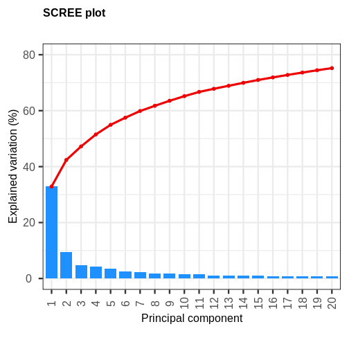
A scree plot of the gene expression data.
Figure 8
Image 1 of 1: ‘A biplot of PC2 against PC1 in the gene expression data, coloured by Grade. The points on the scatter plot separate clearly on PC1, but there is no clear grouping of samples based on Grade across these two groups.’
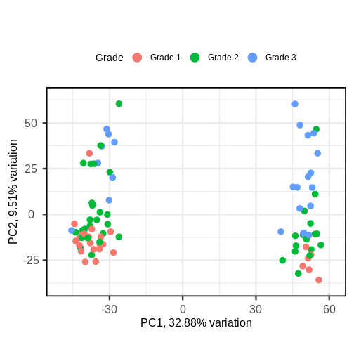
A biplot of PC2 against PC1 in the gene expression data, coloured by
Grade.
Figure 9
Image 1 of 1: ‘A biplot of PC2 against PC1 in the gene expression data, coloured by ER status. The points on the scatter plot separate clearly on PC1, but there is no clear grouping of samples based on ER across these two groups, although there are more ER- samples in the rightmost cluster. Patient ages are overlaid as text near the points, but there is again no clear pattern.’
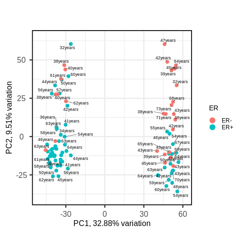
A biplot of PC2 against PC1 in the gene expression data, coloured by ER
status with patient ages overlaid.
Figure 10
Image 1 of 1: ‘A triangular grid of scatter plots. The grid is the upper right triangle of a square, where each entry of the grid corresponds to a plot of one principal component against another. For example, the plot in the upper left corner of the plot corresponds to principal component one plotted against principal component 2, and the plot to the right of this plots principal component 1 against principal component 3. Points correspond to samples, and are coloured arbitrarily from light blue to dark blue.’
Image 1 of 1: ‘A table displaying data of student scores across several subjects. Each row displays the scores across different subjects for a given individual. The plot is annotated at the top with a curly bracket labelled Factor 1: mathematical ability and encompasses the data for the student scores is Arithmetic, Algebra, Geometry, and Statistics. Similarly, the subjects Creative Writing, Literature, Spelling/Grammar are encompassed by a different curly bracket with label Factor 2: writing ability.’
Student scores data across several subjects with hypothesised factors.
Figure 2
Image 1 of 1: ‘A scatter plot of the factor 2 loadings for each feature versus the factor 2 loadings for each feature. The lpsa, lcavol and lcp feature points are located in the east of the plot, indicating a high loading on factor 1 and close to zero loading on factor 2. The lbph and lweight features are located in the north of the plot, indicating a close to zero loading on factor 1 and a high loading on factor 2.’
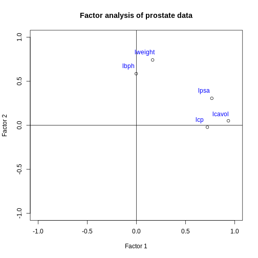
Factor 2 loadings versus factor 1 loadings for each feature.
Figure 3
Image 1 of 1: ‘Scatter plot of random data y versus x. There are many black points on the plot representing the data. Two additional points are shown: the (mean(x), mean(y)) co-ordinate point in red and the (median(x), median(y)) co-ordinate point in blue. The median co-ordinate point in blue has a lower x value and is shown to the left of the red mean co-ordinate point.’
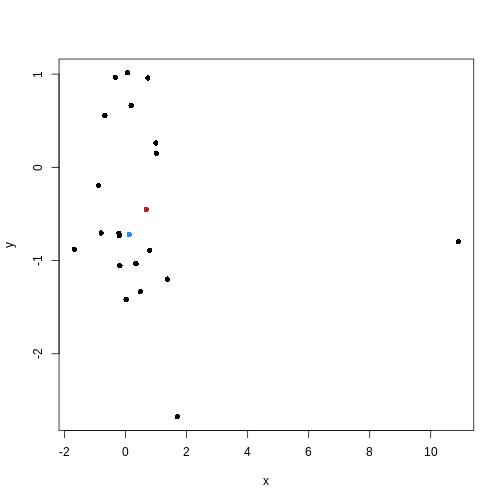
Scatter plot of random data y versus x with the (mean(x), mean(y))
co-ordinate point shown in red and the (median(x), median(y))
co-ordinate point shown in blue.
Image 1 of 1: ‘An animated scatter plot of data y versus x. The animation starts by identifying 3 initial points, delineated by different colours. The animations then colour codes all points by an associated cluster colour, delineating three distinct and non-overlapping clusters in the space of the scatter plot.’
Animation showing the iterative process of K-means clustering on data y
versus x.
Figure 2
Image 1 of 1: ‘A scatter plot of random data y versus x. The points are horizontally partitioned at 2 random groups, forming three colour coded clusters. Circles are drawn around each cluster. The data shown appears to have no clusters but the colours and circles give the appearance of clusters artificially.’
Example of artificial clusters fitted to data points.
Figure 3
Image 1 of 1: ‘A scatter plot of principal component 2 versus principal component 1 of the scrnaseq data. Each point is one of four colours, representing cluster membership. Points of the same colour appear in the same areas of the plot, showing four distinct clusters in the data.’
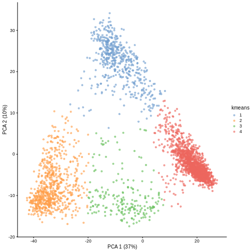
Scatter plot of principal component 2 versus principal component 1 with
points colour coded according to the cluster to which they belong.
Figure 4
Image 1 of 1: ‘A scatter plot of principal component 1 versus principal component 2 of the scrnaseq data. Each point is one of five colours, representing cluster membership. Points of the same colour appear in the same areas of the plot, showing five distinct clusters in the data.’
Scatter plot of principal component 2 against principal component 1 in
the scRNAseq data, coloured by clusters produced by k-means clustering.
Figure 5
Image 1 of 1: ‘Scatter plot of random data y versus x. There are many black points on the plot representing the data. Two additional points are shown: the (mean(x), mean(y)) co-ordinate point in red and the (median(x), median(y)) co-ordinate point in blue. The median co-ordinate point in blue has a lower x value and is shown to the left of the red mean co-ordinate point.’
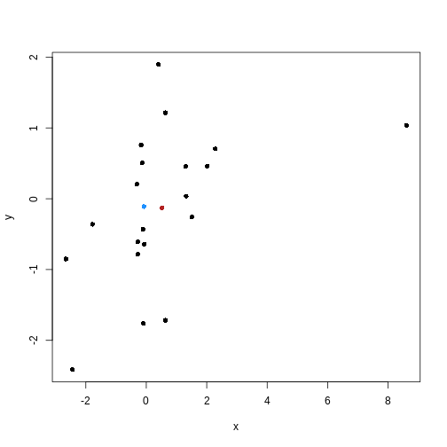
Scatter plot of random data y versus x with the (mean(x), mean(y))
co-ordinate point shown in red and the (median(x), median(y))
co-ordinate point shown in blue.
Figure 6
Image 1 of 1: ‘Plot with horizontal axis silhoutte width. The plot shows the silhouette width for each point in the data set according to cluster. Cluster 4 contains over half of the points in the data set and largely consists of points with a large silhouette list, leading to a bar that extends to the right side of the graph. The other clusters contain many fewer points and have slightly lower silhouette widths. The bars therefore reach further to the left than cluster 4.’
Silhouette plot for each point according to cluster.
Figure 7
Image 1 of 1: ‘A scatter plot of the random y versus x data. Cluster membership is delineated using different point characters. Data points in the same cluster have the same point character. Each point is coloured by its silhouette width: solid red delineating a silhouette width of 1 and white delineating a silhouette width of 0. Colours in between delineate the intermediate colours. Many points are red and fade to white at the boundaries of each cluster. ’
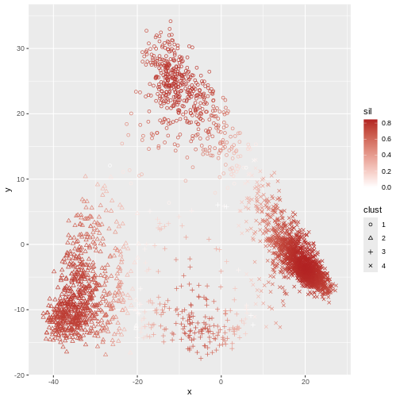
Scatter plot of y versus x coloured according to silhouette width and
point characters grouped according to cluster membership.
Figure 8
Image 1 of 1: ‘A scatter plot of principal component 1 versus principal component 2 of the scrnaseq data. Each point is one of five colours, representing cluster membership. Points of the same colour appear in the same areas of the plot, showing five distinct clusters in the data.’
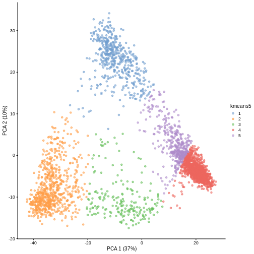
Scatter plot of principal component 2 against principal component 1 in
the scRNAseq data, coloured by clusters produced by k-means clustering.
Figure 9
Image 1 of 1: ‘Plot with horizontal axis silhoutte width. The plot shows the silhouette width for each point in the data set according to cluster. Cluster 4 contains almost half of the points in the data set and largely consists of points with a large silhouette list, leading to a bar that extends to the right side of the graph. The other clusters contain many fewer points and have similar silhouette widths. The bars for cluster 5 are much smaller, with a small number extending to the left of the origin, indicating negative silhouette widths.’
Silhouette plot for each point according to cluster.
Figure 10
Image 1 of 1: ‘A histogram of the mean of each bootstrapped sample. The histogram appears roughly symmetric around 2.8 on the x axis.’
Histogram of mean of bootstapped samples.
Figure 11
Image 1 of 1: ‘Grid of 16 squares labelled 1-4 on each of the x and y axes. The diagonal and off-diagonal squares of the grid are coloured in green, indicating the highest scoring value of 1 according to the legend. The lower triangular squares are coloured in grey, indicating NA values since these would be the same as the upper triangular squares.’
Grid of empirical cluster swapping behaviour estimated by the bootstrap
samples.
Figure 12
Image 1 of 1: ‘Grid of 25 squares labelled 1-5 on each of the x and y axes. The diagonal and off-diagonal squares of the grid are coloured in green, indicating the highest scoring value of 1 according to the legend, with the exception of the square corresponding to (4, 5), which is slightly darker green indicating a lower value. The lower triangular squares are coloured in grey, indicating NA values since these would be the same as the upper triangular squares.’
Grid of empirical cluster swapping behaviour estimated by the bootstrap
samples.
Image 1 of 1: ‘Scatter plot of observations x2 versus x1. Two clusters of pairs of observations are shown by blue and red boxes, each grouping two observations that are close in their x and y distance.’
Example data showing two clusters of observation pairs.
Figure 2
Image 1 of 1: ‘Scatter plot of observations x2 versus x1. Three boxes are shown this time. Blue and red boxes contain two observations each. The two boxes contain points that are relatively far apart. A third green box is shown encompassing the blue box and an additional data point.’
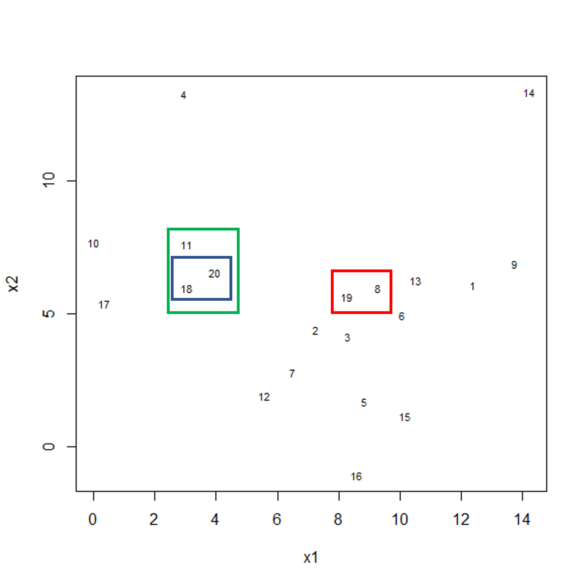
Example data showing fusing of one observation into larger cluster.
Figure 3
Image 1 of 1: ‘A scatter plot of randomly-generated data x2 versus x1. The points appear fairly randomly scattered, arguably centered towards the bottom of the plot.’
Scatter plot of randomly-generated data x2 versus x1.
Figure 4
Image 1 of 1: ‘A line plot depicting a dendrogram --- a tree structure representing the hierarchical structure of the data. The data broadly fit into three clusters, with one sample (14) being quite dissimilar to all others, and the rest of the data comprising two other clusters (one larger than the other).’
A dendrogram of the randomly-generated data.
Figure 5
Image 1 of 1: ‘A dendrogram for the methyl_mat data with boxes overlaid on clusters. There are 5 boxes in total, each indicating separate clusters.’
Dendrogram with boxes around clusters.
Figure 6
Image 1 of 1: ‘A dendrogram with the different clusters in 4 different colours.’
Dendrogram with coloured branches delineating different clusters.
Figure 7
Image 1 of 1: ‘A line plot depicting a dendrogram --- a tree structure representing the hierarchical structure of the data. The data broadly fit into three clusters, with one sample (14) being quite dissimilar to all others, and the rest of the data comprising two other clusters (one larger than the other). A dashed horizontal line at a height of 5 indicates the cut point used to divide the data into clusters.’
A dendrogram of the randomly-generated data.
Figure 8
Image 1 of 1: ‘A scatter plot of data simulated to form two crescent shapes. The crescents are horizontally orientated with a a rough line of vertical symmetry.’
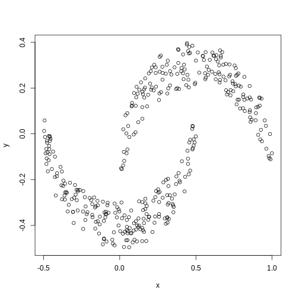
Scatter plot of data simulated according to two crescent-shaped point
clouds.
Figure 9
Image 1 of 1: ‘A scatter plot of the crescent-shaped simulated data calculated using Euclidean distance. The points are coloured in black or red according to their membership to 2 clusters. The points in the tails of each crescent have inherited the colour of the opposite crescent.’
Scatter plot of crescent-shaped simulated data, coloured according to
clusters calculated using Euclidean distance.
Figure 10
Image 1 of 1: ‘A scatter plot of synthetic data, comprising two variables, with points forming two crescent-shaped clusters. Points are coloured based on hierarchical clustering with single linkage, with two clusters, corresponding to the two crescent-shaped clouds.’
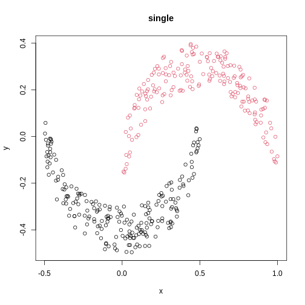
A scatter plot of synthetic data coloured by cluster.
Figure 11
Image 1 of 1: ‘A scatter plot of synthetic data, comprising two variables, with points forming two crescent-shaped clusters. Points are coloured based on hierarchical clustering with ward.D linkage, with two clusters, corresponding to the two crescent-shaped clouds.’
A scatter plot of synthetic data coloured by cluster.
Figure 12
Image 1 of 1: ‘A scatter plot of synthetic data, comprising two variables, with points forming two crescent-shaped clusters. Points are coloured based on hierarchical clustering with ward.D2 linkage, with two clusters, though these do not correspond to the two crescent-shaped clouds.’
A scatter plot of synthetic data coloured by cluster.
Figure 13
Image 1 of 1: ‘A scatter plot of synthetic data, comprising two variables, with points forming two crescent-shaped clusters. Points are coloured based on hierarchical clustering with average linkage, with two clusters, corresponding to the two crescent-shaped clouds.’
A scatter plot of synthetic data coloured by cluster.
Figure 14
Image 1 of 1: ‘A scatter plot of synthetic data, comprising two variables, with points forming two crescent-shaped clusters. Points are coloured based on hierarchical clustering with mcquitty linkage, with two clusters, though these do not correspond to the two crescent-shaped clouds.’
A scatter plot of synthetic data coloured by cluster.
Figure 15
Image 1 of 1: ‘A scatter plot of synthetic data, comprising two variables, with points forming two crescent-shaped clusters. Points are coloured based on hierarchical clustering with median linkage, with two clusters, though these do not correspond to the two crescent-shaped clouds.’
A scatter plot of synthetic data coloured by cluster.
Figure 16
Image 1 of 1: ‘A scatter plot of synthetic data, comprising two variables, with points forming two crescent-shaped clusters. Points are coloured based on hierarchical clustering with centroid linkage, with two clusters, though these do not correspond to the two crescent-shaped clouds.’
A scatter plot of synthetic data coloured by cluster.
Figure 17
Image 1 of 1: ‘A line plot of simulated value versus observation number, coloured by sample. Samples a and b are concentrated at the bottom of the plot, while sample c is concentrated at the top of the plot. Samples a and c have exactly the same vertical pattern.’
Line plot of simulated value versus observation number, coloured by
sample.
Figure 18
Image 1 of 1: ‘A dendrogram of the example simulated data clustered according to Euclidean distance. The dendrogram shows that sample c definitively forms its own cluster for any cut height and samples a and b merge into a cluster at a height of around 6.’
Dendrogram of the example simulated data clustered according to
Euclidean distance.
Figure 19
Image 1 of 1: ‘A dendrogram of the example simulated data clustered according to correlation. The dendrogram shows that sample b definitively forms its own cluster and samples a and c form definitively form their own cluster for any cut height.’
Dendrogram of the example simulated data clustered according to
correlation.
Figure 20
Image 1 of 1: ‘Heatmaps of features versus samples, coloured by simulated value. The columns (samples) are clustered according to the correlation. Samples a and b have mostly low values, delineated by blue in the first plot and yellow in the second plot. Sample c has mostly high values, delineated by red in the first plot and brown in the second plot. Samples A and C form a cluster separate from sample B in the column dendrogram.’
Heatmaps of features versus samples clustered in the samples according
to correlation.
Figure 21
Image 1 of 1: ‘A dendrogram for clustering of methylation data. Identical to that in the section Highlighting dendrogram branches, without the colour overlay to show clusters.’


![A line plot of coefficient estimates against log lambda for a ridge regression model. A dashed vertical line depicts the optimal lambda value towards the left of the plot. Lines are depicted in different colours, with coefficients generally having large values on the left of the plot (small log lambda) and moving smoothly and gradually towards zero to the right of the plot (large log lambda). Some coefficients appear to increase and then decrease in magnitude as lambda increases, or switch signs.](fig/03-regression-regularisation-rendered-chooselambda-1.png)


![Plot with horizontal axis silhoutte width. The plot shows the silhouette width for each point in the data set according to cluster. Cluster 4 contains almost half of the points in the data set and largely consists of points with a large silhouette list, leading to a bar that extends to the right side of the graph. The other clusters contain many fewer points and have similar silhouette widths. The bars for cluster 5 are much smaller, with a small number extending to the left of the origin, indicating negative silhouette widths.](fig/06-k-means-rendered-unnamed-chunk-2-1.png)